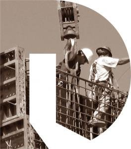

Paul
Paul became an OpenDoors client in 2009.
“I had been in and out of prison for nine and a half years starting when I was eighteen years old… With the help of Everette Frye, my discharge planner from OpenDoors, I was accepted into a drug treatment program at Kent House. After I graduated the program, I tried to get back on my feet. I had had a million doors slammed in my face, and I didn’t have any work experience. I finished my GED in prison, but a lot of jobs were closed to me.
When I got out, I started working with Jesse from OpenDoors. He was instrumental in getting me a job as a roofer. I started working at a car wash one day a week, too. Eventually, I was able to take a welding class and become a crane operator. I just landed a job at another company! I’m now taking a Spanish class and learning to read blueprints to get even better jobs. It took a lot of hard work and determination. For me, it was about learning that anything is possible, getting out of bed each day, and putting the right foot forward.”